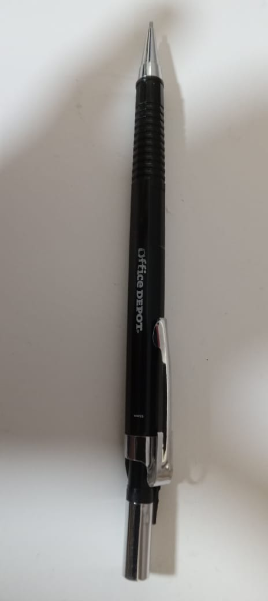

Google vs Mobilenet
Linterna
Google - Si lo detecto
Mobilenet - Si lo detecto
Ajedrez
Google - Si lo detecto
Mobilenet - No lo detecto
Tren de jugete
Google - Si lo detecto
Mobilenet - Si lo detecto
Pluma de escribir

Google - Si lo detecto
Mobilenet - No lo detecto
Boomerang
Google - Si lo detecto
Mobilenet - No lo detecto
Conclusion:
Google Lens es mejor por que Mobilenet detecta ciertos objetos con mucha mas frecuencia, por ejemplo el microfono,
los lentes de sol y la mascara. En cambio Google Lens detecta las imagenes con la misma frecuencia.